File: 000000.gt.txt (if the image is defective, simply delete all Arabic text and the line will be excluded)
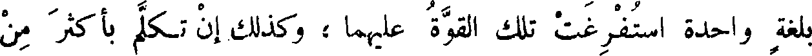
بلغة واحدة استفرغت تلك القوة عليهما؛ وكذلك إن تكلم بأكثر من
File: 000001.gt.txt (if the image is defective, simply delete all Arabic text and the line will be excluded)
لغتين ، وعلى حساب ذلك تكون الترجمة لجميع اللغات . وكلما كان الباب
File: 000002.gt.txt (if the image is defective, simply delete all Arabic text and the line will be excluded)
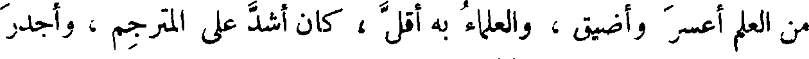
من العلم أعسر وأضيق ، والعلماء به أقل ، كان أشد على المترجم ، وأجدر
File: 000003.gt.txt (if the image is defective, simply delete all Arabic text and the line will be excluded)
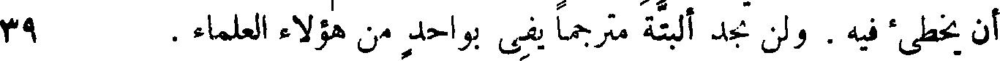
أن يخطئ فيه . ولن تجد البتة مترجما يفي بواحد من هؤلاء العلماء . 39
File: 000004.gt.txt (if the image is defective, simply delete all Arabic text and the line will be excluded)
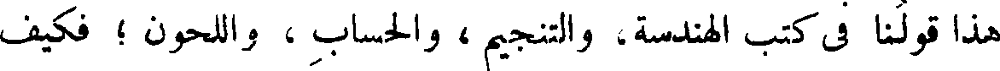
هذا قولنا في كتب الهندسة، والتنجيم ، والحساب ، واللحون ؛ فكيف
File: 000005.gt.txt (if the image is defective, simply delete all Arabic text and the line will be excluded)
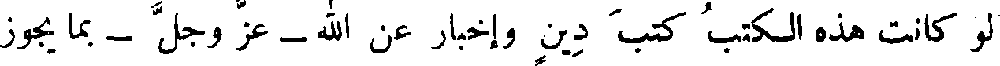
لو كانت هذه الكتب كتب دين وإخبار عن الله - عز وجل- بما يجوز
File: 000006.gt.txt (if the image is defective, simply delete all Arabic text and the line will be excluded)
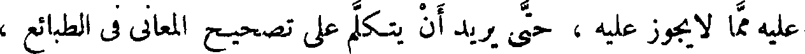
عليه مما لا يجوز عليه ، حتى يريد أن يتكلم على تصحيح المعاني في الطبائع ،
File: 000007.gt.txt (if the image is defective, simply delete all Arabic text and the line will be excluded)
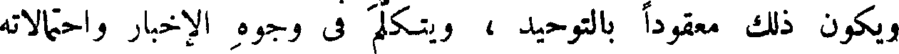
ويكون ذلك معقودا بالتوحيد ، ويتكلم في وجوه الإخبار واحتمالاته
File: 000008.gt.txt (if the image is defective, simply delete all Arabic text and the line will be excluded)
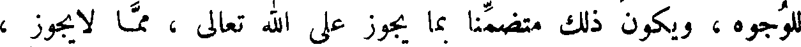
للوجوه ، ويكون ذلك متضمنا بما يجوز على الله تعالى ، مما لا يجوز ،
File: 000009.gt.txt (if the image is defective, simply delete all Arabic text and the line will be excluded)
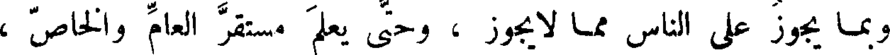
وبما يجوز على الناس مما لا يجوز ، وحتى يعلم مستقر العام والخاص ،
File: 000010.gt.txt (if the image is defective, simply delete all Arabic text and the line will be excluded)
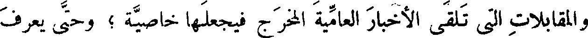
والمقابلات التي تلقى الأخبار العامية المخرج فيجعلها خاصية ؛ وحتى يعرف
File: 000011.gt.txt (if the image is defective, simply delete all Arabic text and the line will be excluded)
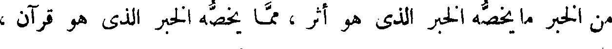
من الخبر ما يخصه الخبر الذي هو أثر ، مما يخصه الخبر الذي هو قرآن ،
File: 000012.gt.txt (if the image is defective, simply delete all Arabic text and the line will be excluded)
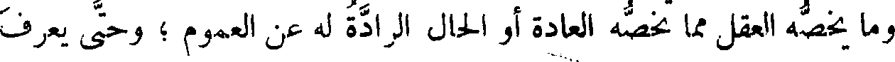
وما يخصه العقل مما تخصه العادة أو الحال الرادة له عن العموم ؛ وحتى يعرف
File: 000013.gt.txt (if the image is defective, simply delete all Arabic text and the line will be excluded)
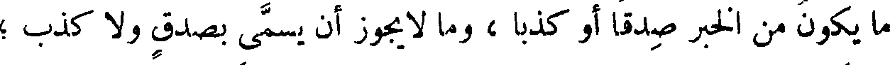
ما يكون من الخبر صدقا أو كذبا ، وما لا يجوز أن يسمى بصدق ولا كذب ؛
File: 000014.gt.txt (if the image is defective, simply delete all Arabic text and the line will be excluded)
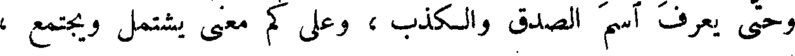
وحتى يعرف اسم الصدق والكذب ، وعلى كم معنى يشتمل ويجتمع ،
File: 000015.gt.txt (if the image is defective, simply delete all Arabic text and the line will be excluded)
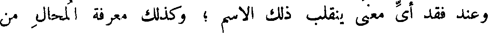
وعند فقد أي معنى ينقلب ذلك الاسم ؛ وكذلك معرفة المحال من
File: 000016.gt.txt (if the image is defective, simply delete all Arabic text and the line will be excluded)
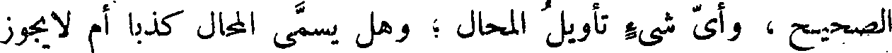
الصحيح ، وأي شيء تأويل المحال ؛ وهل يسمى المحال كذبا أم لا يجوز
File: 000017.gt.txt (if the image is defective, simply delete all Arabic text and the line will be excluded)
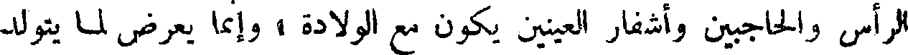
الرأس والحاجبين وأشفار العينين يكون مع الولادة ، وإنما يعرض لما يتولد
File: 000018.gt.txt (if the image is defective, simply delete all Arabic text and the line will be excluded)
من فضول البدن .
File: 000019.gt.txt (if the image is defective, simply delete all Arabic text and the line will be excluded)
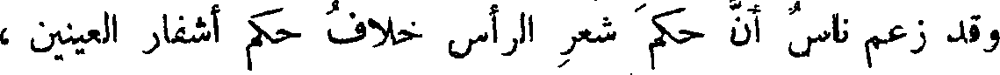
وقد زعم ناس أن حكم شعر الرأس خلاف حكم أشفار العينين ،
File: 000020.gt.txt (if the image is defective, simply delete all Arabic text and the line will be excluded)
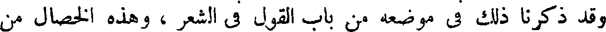
وقد ذكرنا ذلك في موضعه من باب القول في الشعر ، وهذه الخصال من
File: 000021.gt.txt (if the image is defective, simply delete all Arabic text and the line will be excluded)
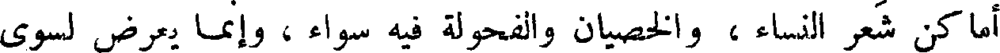
أماكن شعر النساء ، والخصيان والفحولة فيه سواء، وإنما يعرض لسوى
File: 000022.gt.txt (if the image is defective, simply delete all Arabic text and the line will be excluded)
52 ذلك من الشعر الحادث الأصول ، الزائد في النبات. ألا ترى أن المرأة
File: 000023.gt.txt (if the image is defective, simply delete all Arabic text and the line will be excluded)
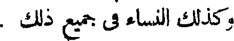
وكذلك النساء في جميع ذلك .
File: 000024.gt.txt (if the image is defective, simply delete all Arabic text and the line will be excluded)
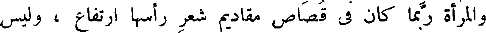
والمرأة ربما كان في قصاص مقاديم شعر رأسها ارتفاع ، وليس
File: 000025.gt.txt (if the image is defective, simply delete all Arabic text and the line will be excluded)
ذلك بنزع ولا جلح ، إذا لم يكن ذلك حادثا يحدثه الطعن في السن .
File: 000026.gt.txt (if the image is defective, simply delete all Arabic text and the line will be excluded)
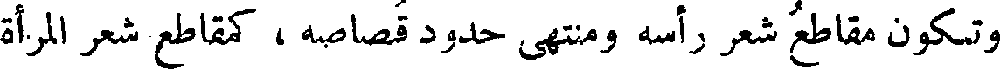
وتكون مقاطع شعر رأسه ومنتهى حدود قصاصه، كمقاطع شعر المرأة
File: 000027.gt.txt (if the image is defective, simply delete all Arabic text and the line will be excluded)
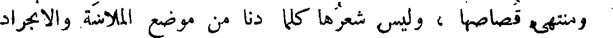
ومنتهى قصاصها ، وليس شعرها كلما دنا من موضع الملاسة والانجراد
File: 000028.gt.txt (if the image is defective, simply delete all Arabic text and the line will be excluded)
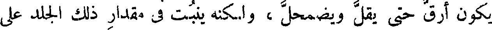
يكون أرق حتى يقل ويضمحل ، ولكنه ينبت في مقدار ذلك الجلد على
File: 000029.gt.txt (if the image is defective, simply delete all Arabic text and the line will be excluded)
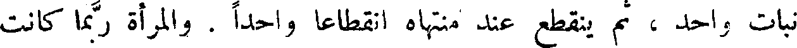
نبات واحد ، ثم ينقطع عند منتهاه انقطاعا واحدا . والمرأة ربما كانت
To Save: `Ctrl+s`, make sure to choose `Webpage, complete`!